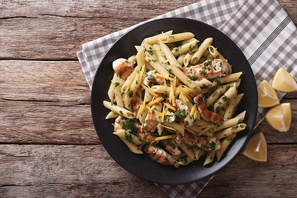

Pasta pesto kip met citroen
Ingredienten
- 2 dunne kipkoteletten
- zout en peper
- 1 scheutje olijfolie
- grof zout
- 300 g penne
- 1 citroen
- pesto
Bereiding
- Kruid de kipkoteletten. Verhit een scheutje olie in een pan. Kook de schnitzels ongeveer 5 minuten aan elke kant. Als ze goudbruin zijn, leg ze dan op absorberend papier.
- Doe de basilicumblaadjes en knoflook in een blender, samen met de pijnboompitten en de helft van de olie. Meng tot een puree, voeg de rest van de olie en de geraspte Parmezaanse kaas met de pecorino toe (bewaar wat voor decoratie). Meng opnieuw. Maak anders de pesto met een vijzel en stamper.
- Kook de penne in een pan gevuld met gezouten water gedurende de tijd aangegeven op de verpakking. Droogleggen.
- Meng de pesto met de spaghetti en bestrooi met de overgebleven geraspte Parmezaanse kaas. Voeg de gesneden gegrilde kip en de citroenschil toe.